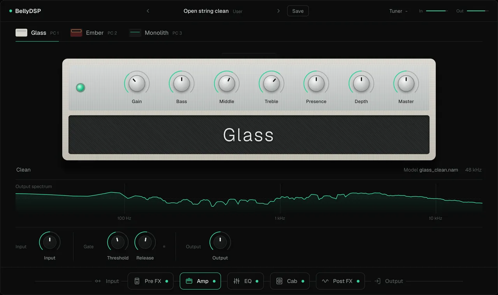
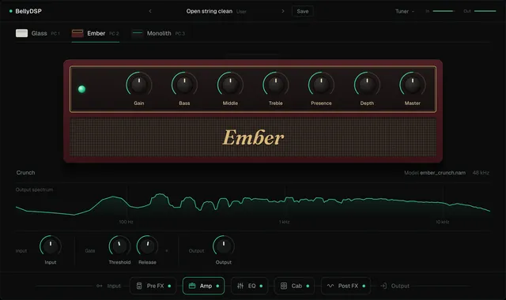
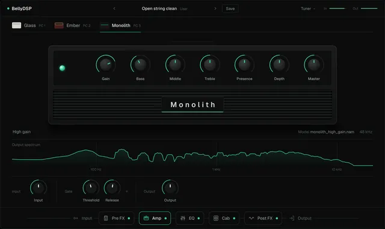
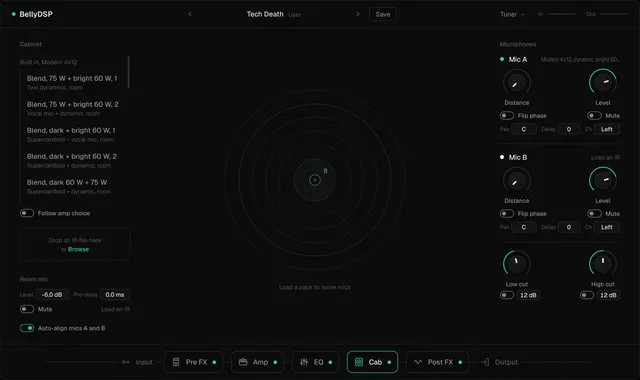
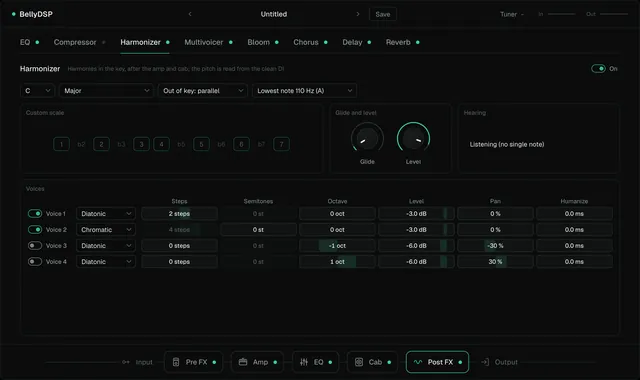
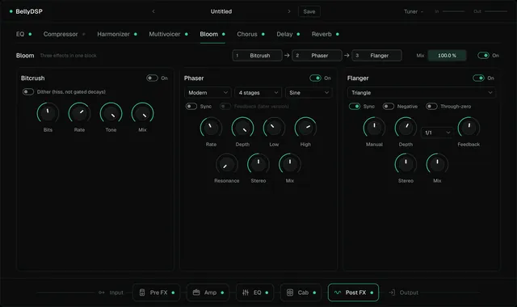
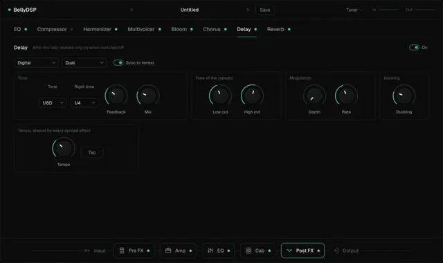
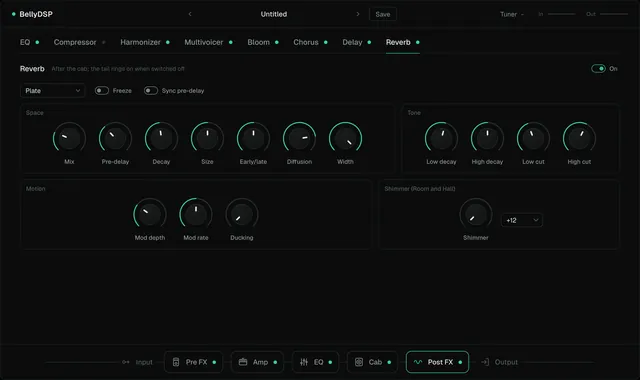
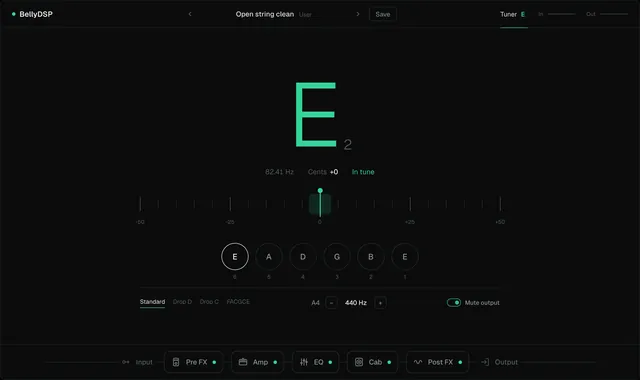

Free and open source. macOS and Windows.
A guitar amp sim and multi-effects app.
Plug your guitar into an audio interface and play through neural amp captures, a three-mic cab, drives, and a full set of effects, with a tuner, presets, scenes, and MIDI footswitch control. Every block runs with zero added latency.

What it does
One signal chain, in this order. Click a block in the app to open its page, or its dot to bypass it.
Three amp slots, always running
Each slot plays a NAM capture (any amp-only .nam file) and stays running in the background, so switching between them is instant and click-free, from the panel or a MIDI footswitch (program change 1, 2, 3). Each slot is loudness-matched, calibrated to its capture's recorded input level, and has its own trims and tone controls.
Every slot comes with a built-in capture, clean, crunch, and high gain, so there's something to play the moment it opens. For now they're trained from BellyDSP's own amp model; captures of real amps will replace them.
A cab with mics you can move
Two close mics and a stereo room mic, each an impulse response with level, pan, polarity, delay, and mute, with automatic phase alignment and low and high cuts. Load a cab pack and drag a close mic across the speaker to morph between positions.
21 public-domain (CC0) cab IRs are built in, from a vintage and a modern 4x12. Load your own .wav IRs too.
Pre FX
- Gate before the amp and after it, linked, listening to the clean guitar signal, with adaptive release and a Learn button
- Compressor, in a studio and a pedal style
- Boost and overdrive, modelled from circuit schematics and oversampled, with several modes each
- EQ: a 9-band graphic or a 5-band parametric
Drag the blocks to reorder them.
Post FX
- EQ and compressor
- Harmonizer: up to four voices in key, reading the pitch from the clean guitar signal
- Multivoicer: up to eight voices for stacks and doubles
- Bloom: bitcrusher, phaser, and flanger in one block, in any order
- Chorus, delay (digital, analog, tape; stereo, ping-pong, dual; ducking), and reverb (room, hall, plate; freeze; shimmer)
Delay and reverb tails ring on when you switch them off. Drag to reorder.
Tuner, tempo, presets, scenes, MIDI
- A tuner with a needle on a ±50 cent scale, four tunings, A4 from 430 to 450 Hz, and a mute
- One tempo, tapped from the panel or a footswitch; delay, chorus, phaser, flanger, and reverb pre-delay can sync to it
- Presets with eight scenes each, undo and redo, A/B compare, and five factory presets
- Right-click any control to MIDI-learn a footswitch or an expression pedal; mappings save with the preset
A real-time audio engine
Zero added latency. The one exception is opt-in: the flanger's through-zero setting delays the signal by 5 ms while it's switched on, and says so. The audio thread never allocates memory, frees it, or waits on a lock, and an automated test checks that for every feature. With every block on, it uses about a quarter of the time a 128-sample buffer allows on the developer's Apple silicon Mac.
It runs at 48 kHz, the rate NAM captures are trained at.
A look around
Snapshots of the app, rendered by its own test suite.
















Free and open source
BellyDSP is free software under the GNU Affero General Public License, version 3 or later (AGPL-3.0-or-later). You can use it, study it, change it, and share it. It comes with no warranty.
Every release is built from a commit that's public and tagged first, so the exact source of every download is on GitHub. In the app, BellyDSP (top left) > Source code for this version opens it.
Bring your own tones
The amps are NAM captures: load any amp-only .nam file into a slot, or make your own with NAM's open trainer. The cab takes any impulse response as a .wav file. Presets remember which files they use and find them again if you move them.
The built-in IRs are public domain (CC0). The built-in captures are Sean's, under CC BY 4.0.
Credits
BellyDSP is made by Sean Snaider and stands on these open projects. Their licences ship with the app (BellyDSP > About / licenses).
- NeuralAmpModelerCore
- The official engine of NAM (Neural Amp Modeler), by Steven Atkinson. It runs every amp capture. MIT licence.
- JUCE
- The framework for audio, the app window, and the interface, used under the AGPLv3.
- Eigen
- The linear algebra library NAM runs on. MPL 2.0.
- nlohmann/json
- Reads NAM's capture files. MIT licence.
- Sparkle and WinSparkle
- The updaters on macOS and Windows. MIT licence.
- Geist and Fraunces
- The typefaces in the app (Geist on this site too, served from here). SIL Open Font License.
- Jester Dyne Productions
- The built-in cab IRs, by Bastian Karschewski, released into the public domain (CC0). Thank you.
- Claude Code
- Sean designed and directed BellyDSP, decided how it should work and look, and plays it; Anthropic's Claude Code wrote much of the code, the tests, and this site under his direction.